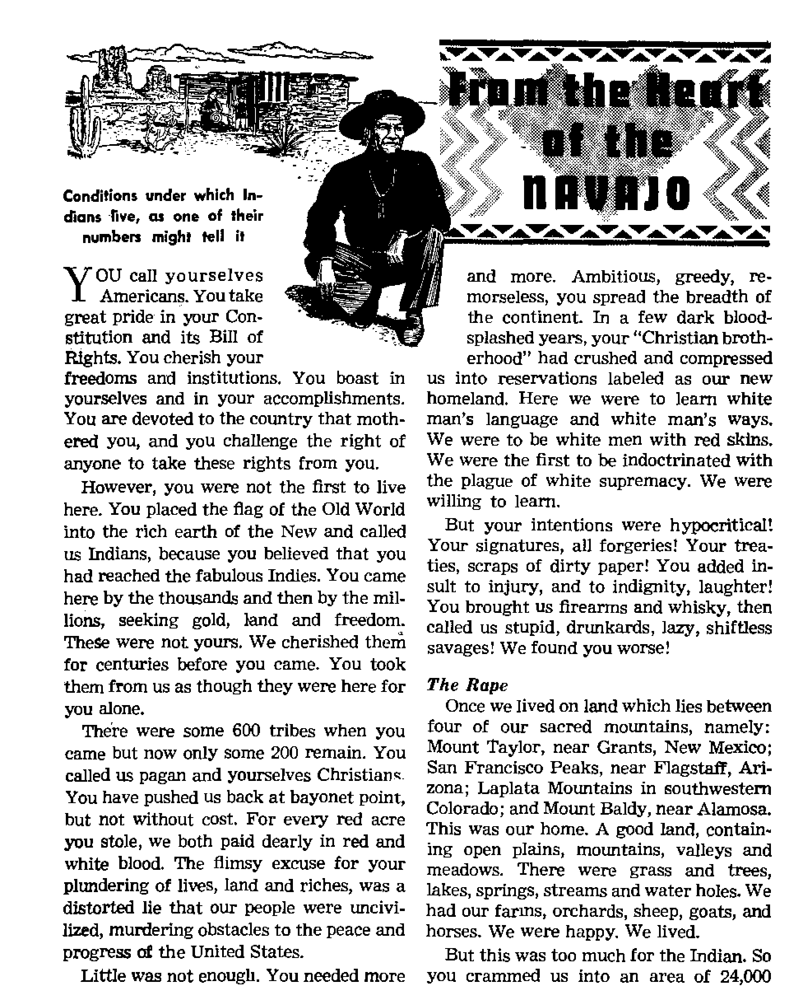

Oil does not calm these troubled waters
Conditions under which Indians live, as one of their numbers might ell ir
.. . - -
How bigotry wars on freedom in America
Fixes dates in archaeology
^FEBRUARY 22, 1952 SEMIMONTHLY
THE MISSION OF THIS JOURNAL
News sources that are able to keep you awake to the vital issues of our times must be unfettered by censorship and selfish Interests. “Awake J” has no fetters. It recognizes facts, faces facts, Is free to publish facia. It is not bound by political ambitions or obligations; it is unhampered by advertisers whose toes must not be trodden on; it Is unprejudiced by traditional creeds. This journal keeps itself free that it may speak freely to you. But it does not abuse its freedom. It maintains integrity to truth.
“Awake !rt uses the regular news channels, but is not dependent on them. Its own correspondents are on all continents, in scores of nations. From the four corners of the earth their uncensored, on-the-scenes reports come to you through these columns. This journal's viewpoint is not narrow, but is international. It is read in many nations, in many languages, by persons of all ages. Through its pages many fields of knowledge pass in review—government, commerce, religion, history, geography, science, social conditions, natural wonders—why, its coverage Is as broad as the earth and as high as the heavens.
"Awake f* pledges itself to righteous principles, to exposing hidden fbeg and subtle dangers, to championing freedom for all, io comforting mourners and strengthening those disheartened by the failures of a delinquent world, reflecting sure hope for the establishment o( a righteous New World,
Get acquainted with "Awake!” Keep awake by reading “Awake!"
PtlBLifttTED Semimonthly by WATCHTOWER BIBLE AND TRACT SOCIETY, INC.
11T Adams Street Brooklyn lr N. Y., IL S. A.
N. H. Knokb, President Ghani Soithb, Secretary
printing Jaaue: 976,000 Fivfr cent* a copy
Lutauts Which the aiaguifli h piblbUd:
Semimonthly—Africans, Endish, Finnish, German, Nurartgiaii, Spanish. Monthly—Danlsli, French, Greek, Portuguese, Swedish, Ukrainian.
Office? Yearly subscription Hate
AnwlMi U.S., 117 Adama at., Brooklyn 1. N,Y. $1
Atifritta, 11 Beresford Hd.. fftrattufeld. iY.iS.Wl 8s Canada, 40 Irwin Are., Twonto 5, Ontario 41 England, 34 Craven Terrace, Louden, W. 2 Ts South Africa 623 Elorttra Hqia». Cup? Towu 7a
Rtklttanctft should be sent io effittj in your roun-try tn compliance with regulstlona to guarantee safe delivery of mimey. Remittances art accepted at Brooklyn from countries where no office ts Located, by Intom^tional money order only. Subscription rates In differsnt countries are here stated in l»r' -currency. Notice ot exflnUim (with renttrai bJans, is seat at least two issues before snijecriptiott expires. CMnju vt addrut when sent to our office may be expected effective within out month, fiend your old as well as new address,
Entered M teeond-elass matter at Brooklyn, N. I.
Act of Man* 3, 1B7&. Printed in U. S. A.
CONTENTS
Civil Liberties—Practical or Poetry?
Hie Political Puzzle of Asia and the Middle East
Geologists Backtrack on Time Scale
The Fawcett Jungle Riddle—Solved or
“Your Word Is Truth”
“The End of the World’*—What World? 24 “The Things They Did
“Now It is high time to awake"—Romans 13:11 &
Volume XX Xi 11 Brooklyn, N.Y., February 22f 1952 Number'
CIVIL LIBERTIES—PRACTICAL OR POETRY?
f <*T DISAGREE completely with what you I have to say, but I would defend to the death your right to say it? These or words to the same effect are attributed to the eighteenth-century French writer Voltaire. That he was their certain source has been disputed. But that the words have been utilized by the public and officials high and low of professedly democratic quarters none can deny.
Talk of freedom does make splendid poetic phrase. But is it practical? Can we stand the nearby voice of opinions opposite to our own? Great portions of the earth have been swallowed by rulers who utterly refuse such toleration. Aware of the poison of intolerance and the subtlety with which it works, America’s founding fathers sought to squelch it in the celebrated Bill of Rights. But even the Bill of Rights is but writing. It must be upheld by each succeeding generation. How do you feel? It is easy to uphold the rights of parties of your same mind. However, do you show equal zeal in protecting those with whom you may bitterly disagree?
During September, 1951, attention in various parts of the country was arrested by a rural community in Indiana where a country school principal lost his job because of his firm religious convictions. Specifically, the case involved William Lewis, a teacher of many years’ experience, who in recent months had become an active follower in the beliefs and practices of Jeho vah’s witnesses. Only one of Mr. Lewis’ be liefs became the target of special fire, his conscientious objection to flag saluting which Jehovah’s witnesses consider a fom of idolatry. Shortly after the newly hirec teacher took up his duties at the one-and one-half-story country school in Hall, In diana, irate parents set up a blockade or and near the grounds.
Attempts by the teacher to reason with the parents proved fruitless. On one occa sion the principal’s wife was assaulted anc knocked down when she attempted t£ photograph some of the women attending a school meeting designed to secure hei husband’s ouster. Under pressure, Mr Lewis refused to resign but determined t( fight for the principle of free worship in volved. He said: “While these people trj to keep me from teaching because they saj I don’t respect the flag, they are showing that they have no respect for the democracy for which the flag stands.”
The parents seeking his discharge forced a hearing of petition to dismiss him in earlj October. Though his lawyer ably disprovec all charges questioning either Mr. Lewis respect for the flag or the constitution or his ability or fitness to teach, the acting trustee of Gregg township bowed to the will of the mob and dismissed him. Unfortunately this provided a change in Mr. Lewis’ capacity when he went into
Superior Court in Indianapolis at the close of October to request protection by local officials while he reclaimed his job. Now that he had been fired Judge Norman E. Brennon declared he was unable to grant the request. However, Judge Brennon did rap the negligence with which local and state officials had handled the matter up until then. This included the governor himself whom the judge berated for first consulting with his state police superintendent before deciding to dispatch aid to the beleaguered Mr. Lewis.
In liberal lands it is generally assumed that all citizens agree on the urgency of upholding civil liberties against any threat. Yet no issue is more cutting in the way it divides opinion and sends so many of its professed devotees scrambling for excuses behind which they can hide. Larkin Hannah, member of the Gregg Township Advisory Board, first supported Lewis, then withdrew in the thick of the fight. Coroner E. C. Holmes, one of the local “public servants’* involved, lamented: “If that sect wants protection, they should abide by our rules. Each group in the nation can’t set up its own interpretation of the law.” What “our rules” are he did not explain. Of course, if everyone believed alike there would be little conflict. As for their “own interpretation of the law”, no refutation was offered to Jehovah’s witnesses’ citation of Supreme Court decisions in which compulsory flag saluting has been declared unconstitutional.
Would the religious front offer any constructive assistance? No. Dr. Ralph Holland of the Indiana Council of Churches interviewed local residents and later declared the issue was not religious but patriotic in nature. The Council declared it would take no action. In short, they listened only to the “mob”, ignored the victim, completely slept through the religious belief that started the dissension and washed their hands at the first opportunity. The Indiana Catholic and Record, official organ of the Archdiocese of Indianapolis, could do no better. It spoke vaguely of Mr. Lewis’ rights not being greater than those of the school patrons and of finding other ways for Jehovah’s witnesses to prove their loyalty. Both Catholic and Protestant officialdom made it clear they would contentedly fold their hands in the matter, come what may.
But the incident did provoke response from many favorable quarters. From distant parts of the country and nearby sections Mr. Lewis received mail, the great majority of the letters highly sympathetic. Some extolled the faith he demonstrated and praised the work of Jehovah’s witnesses in general which inspires and helps such righteously disposed ones. One letter to the Indianapolis News revealed a discerning mind behind it. Poking through the smoke screen of professed patriotism conjured up by Mr. Lewis' oppressors, the writer weighed his excellent records of citizenship and as teacher and principal. Then, touching a sore spot with surprising accuracy, the anonymous sympathizer said:
“On the other hand, the citizens of Hall and surrounding territory have attempted to riot time and again at the least provocation during the last year or so. It seems those people just couldn’t wait to find something to raise a fuss about.”
True. Morgan County, Indiana, setting for this incident, has witnessed no less than five previous mobbings against Jehovah’s witnesses. Demagoguery and intolerance can be habit-forming and cancerous. To minds so afflicted freedom is tolerance for only one narrow view. To resist is the only course for Christians who truly love freedom. This Jehovah’s witnesses have consistently done, allowing courts to thus exercise the law, upholding and protecting the Constitution.
By lfAwoke!rT correspondent in Lebanon
large section of Punjab divided between the Moslems and the Hindus. Riots resulted, with tens of thousands of persons butchered
THE world tensely and eagerly watches the developments from day to day in
the Middle East and throughout Asia as the masses of humanity in that area of the world struggle for their political and economic aspirations. The time has come and gone when the more enlightened nations could, with a small armed force, control the masses of the less enlightened people and exploit their national resources. Nationalistic leaders have risen up and have swayed the masses, making many promises in return for the people’s support. Many of these men, either educated abroad or in foreign-established schools in their own or nearby countries, have learned the secrets of national economy and have learned the extent of the profits reaped by these occupying nations. So they rise up in mighty efforts to get more for themselves, their governments or the people.
Usually, among their political demands is the one for complete national independence. This has been given in many countries, but often with unfavorable results, as the people show an inability to rule themselves with any stability. We see this in India, for example, which cried long and hard for its independence. In order to try to accomplish this with as few repercussions as possible, Britain divided the country into two sections, Pakistan being given to the Moslems and the rest of India and approximately a million made refugees. And note the terrific dispute over Kashmir.
Similar anarchic and riotous conditions ripped the Philippines, Syria and Lebanon, where assassinations have resulted in political strife and changes in governments. In Pakistan the recent assassination of Premier Liaquat-Ali-Khan and the recent assassinations of King Abdullah of Jordan and of Riad Solh of Lebanon show the political unrest and undercurrent of political forces in the East and Middle East.
In Persia national strife and confusion grow as the economic situation worsens. The oil nationalization policy has resulted in no output of Persian oil to any market, Eastern or Western, and has, therefore, not only put thousands of Persians out of work but has removed what royalty the Persian government did receive from the Anglo-Iranian Oil Company. Now there is much unrest and anxiety in that land over the failure of Mossadegh’s oil talks in Washington. Those who put him in power because of his nationalization policy are angry at his lack of success to work out the situation to their benefit
Anglo-Egyptian Controversy
In Egypt, the Anglo-Egyptian controversy over the 1936 Treaty has ceased to
be merely a verbal controversy as it has become a shooting war with skirmishes practically every day which have resulted in several being killed and many injured. The hatred between the opposing sides seems to be growing all the time with continual demonstration of each others’ feelings being shown. After the Persian government’s ultimatum to the English either to reopen the oil talks or to leave the country, and after Britain’s meekly complying and leaving within the allotted time, some say the Egyptians expected the British Lion to roll over and play dead when they abrogated their treaty.
The political puzzle continues to entwine itself as the individual political ambitions of the countries conflict with the ambitions of the Arab peoples in general. Some living in Syria, Lebanon and Jordan favor a “Greater Syria” with Syria absorbing the Jordan Kingdom and part if not all of Lebanon, especially including the important seaport of Beirut. Others, of course, do not. The Moslems favor a reuniting of Lebanon and Syria because this would put all of it under a Moslem government. Syria has a large Moslem majority so, naturally, the government is Moslem, but because Lebanon is believed to have a majority of Christians, the president is Christian and the prime minister is Moslem. If the two countries could be reunited and since Syria is much the larger country it would throw the majority the Moslem way and thus give the Moslems the rulership in every Arab country.
Israeli Complications
The case of Israel, however, is one of the biggest wrenches in the works of peace in the Middle East. The age-long hatred between the Jews and Arabs has not cooled and new situations continually arise which fan the coals of hatred, causing them to burst into flame here and there. Receiitly there have been killings due to a border dispute between Syria and Israel over some swampland on the Syrian-Israeli border. The Jews were draining it and were going to use it for farmland, but the Syrians objected, saying the land was theirs.
The borders of Israel are closed all around and passage is prohibited between her and all of her neighboring states, including Lebanon, Syria, Jordan and Egypt. The Arab states also continue to press an economic blockade against Israel to try to starve her out.
The problem of the Palestinian refugees is a further difficulty in the Middle East. About one million of them are distributed between Lebanon, Syria, Jordan and Egypt In these countries there is already a shortage of employment for the citizens, and having this extra burden makes it increasingly difficult for them. This is because the Palestinians will work for almost nothing, cheaper than the citizen can afford to work and keep his family. So if the commercialist can get a Palestinian to do the work for him at a very cheap rate, he figures, why should he hire a Lebanese, Syrian, etc., to do his work? This difficulty also increases the hatred for the Jews, whom the Arabs believe are responsible for the refugees’ being there. Israel continues to take in immigrants, who the Arabs feel are taking the homes, farms and shops that used to be theirs.
Middle East Command
But all eyes now turn to Egypt where the immediate crisis lies. The Anglo-Egyptian situation has caused and is causing the Arab states to make momentous decisions. As an alternative to the Egyptians, the four powers, the United States, Britain, France and Turkey, offered Egypt an equal part in a Middle East Command under which the British troops in the Suez Canal Zone would be replaced by an inter-
national force to safeguard the canal and the interests of the free nations. Egypt rejected this plan after short deliberation and demands that the Canal Zone be completely evacuated before she will even talk about sharing in any such defense plan. This, in the meantime, would leave the shipping that would pass through the Suez entirely up to the discretion of the Egyptian government, which refused to desist from stopping Israel-bound ships at the order of the United Nations Security Council.
Personages in other Arab governments, however, desire to join the Middle East Command, realizing that it would mean armaments for them and economic advantages either directly or indirectly. If bases for the Western powers were established throughout the Middle East it would result in providing work for many of the native population in addition to the large supplies that would be necessary for the troops maintained, a large portion of which would be purchased from the local markets. This in addition to the money spent by each member of the armed forces and possibly his family would cause an influx of foreign money and would contribute to a higher living standard. This plus the fact that additional educational facilities would result as more foreign schools would be established, not to speak of the protection that would be received from an invasion or an “absorption” movement from the Soviet. One of such men was Syria’s premier, Hasan Hakim, who openly advocated and urged other Arab states to join the Middle East Command. But due to the strong anti-Western feeling in the Syrian Parliament and among the people in general who continually demonstrated against him, he was forced to resign.
This condition throws a strain on the Arab League made up of the seven Arab countries, Syria, Lebanon, Iraq, Jordan, Saudi Arabia, Egypt and Aden, which are supposed to act only in the general interests of all concerned. Premier Hakim and others didiked Egypt’s sudden rejection of the Middle East .Command without even discussing the matter with the other members of the Arab League. This then forced the other countries of the League to go along with Egypt or to break the unity of the League and take an open stand for joining the Command. Egypt, however, continues to express her utmost confidence, saying that the other Arab states will not forsake her in her fight to “realize her national aspirations”.
A feature engendering dislike for the Middle East Command by the Arab states is that it is to include Israel. The Arab states fear that by joining such a command with Israel an official end of hostilities between the Arab states and Israel might result without Israel’s ever having to pay damages or restoring the property of the million Arab refugees. They also fear that it might put Israel into a position of political maneuverability that will place her at an advantage. It might mean that they would no longer be able to enforce their economic blockade against her. They also fear her receiving additional armaments from Western powers, which past policy of Western powers’ arming Israel is one of the chief reasons for anti-Western feelings in the Middle East now.
Anti-Western Demonstrations
Daily demonstrations of nationalism and anti-Western feelings occur from Casablanca to Teheran. These demonstrations are not only outward street demonstrations but are in the form of resolutions, etc., being passed by the various parliaments in favor of Egypt and in sympathy with her. Street demonstrations in Cairo, Alexandria, Teheran and Damascus are violent and outspoken in their disfavor for the West, and anti-Western slogans are shout-
ed such as: ‘Down with England and America! Down with the Western imperialism! Down with the Middle East Command!’ 'rtie Communists, of course, are making the most of the situation and take advantage of the unrest and poverty to further their interests. A large amount of Communist infiltration has taken place in all the Middle East, especially in Iran where the political tension continues to mount. Some believe that if this continues it will soon be ripe for a communist coup.
The anti-Western feeling has automatically become a pro-Eastem one, even among those who are not Communists. The more radical elements, including some of the newspapers, advocate open alliances -with Russia against the West, stating in their editorials such things as: 'The great Eastern bloc of nations won the last war and they shall win the coming peace. We are not alone in our struggle for the throwing off of imperialistic forces. We have with us, not only the countries of the Middle East but of all Asia under the leadership of the Great Soviet Union!’ It looks as though the West might have its hands full trying to set up its Middle East Command.
What will be the West’s reply if the Arab states refuse to co-operate in the Middle East Command? They say that the Suez and the defense of the Middle East are so important to them that they cannot worry what the Arab states have to say. Will they, without the consent of the Arabs, establish their bases and try to protect the Middle East from Communist invasion or infiltration as is being done in Egypt at the present time? Can the United States engage in this and at the same time maintain that she has really never wanted to dominate or occupy anybody? K the West puts this command through without the consent of the Arab governments, what will be Russia’s reply? Would she attack?
So as the East and the West continue to advance their pawns on the chessboard of international politics, one 'cannot help wondering What the outcome of it all will be. The Russian Bear growls, the British Lion roars, the American Eagle ruffles its feathers, and it seems that the United Nations’ dove is about to take a prolonged flight away from the world’s scenes. With the British fighting the Communists in Malaya; the French, in Indo-China; the U. N., in Korea; with the Kashmir dispute in India and Pakistan, with a reported 80,000 Russian and Turkestanian troops on the border just waiting for Western intervention; with the Iranian situation ripening for a Communist overthrow and reports of secret preparations by them to seize Persia’s Azerbaijan province; with the entire Middle East aflame with nationalism; with the Anglo-Egyptian situation; with the situation in French Morocco; with the cold war in Europe; with international rearmament and with U, N. failure, surely the people are discouraged and are not unduly pessimistic when they expect a third world war.
Surely the words of that Great Prophet that walked the earth 1900 years ago are being fulfilled when he said they would be “not knowing the way out because of the roaring of the sea [of humanity] and its agitation, while men become faint out of fear and expectation of the things coming upon the inhabited earth”. The history of Asia and the Middle East has been a long one of suffering, poverty, misery and bloodshed. Is there no hope for these masses of humanity that beat against the present political setups as the waves of the sea beat against the shore? Yes, there is. But it is not in any new political arrangements of this world whether they be Eastern or Western. It is in the new world of righteousness of Jehovah God and Christ Jesus. May they quit trusting in princes of this world and put their trust in it!
square miles of no agricultural value, eroded, overgrazed, arid, and miles of scorched earth and worthless wasteland. The best of our old streams, springs and lakes were excluded. Over 65,000 of us Navajos were to live off a land that was intended originally for 7,000. You forced us to give way before oil and gold, railroads and cities. These were far more important to you than a handful of “bloodthirsty redskins”.
You said, “Work hard on the land, it will produce.” We did. The land of the Navajo has a growing season of 98 days. It takes corn from 90 to 140 days to mature. The first plantings are often killed by late frosts and unripe corn ruined by early ones. Over 37 per cent of our rain comes in July and August and much of it in devastating cloudbursts which sweep the top soil to the Boulder and Hoover dams. Today our best farmland is occupied by white men and Mexicans. Our best grazing land is now controlled by white cattlemen.
Treaties and Promises So Much III Wind
We obeyed the treaty not to harm others, but the treaty failed to protect us from being harmed. We were commanded not to scalp anyone, but no one cared if we were scalped or skinned alive. While we were held alive at Fort Sumner, Washington appropriated $100,000 for our relief; only $30,000 in supplies was received. Whites got the rest. In 1868 a treaty was signed. The treaty authorized purchase of 500 beef cattle and 1,000,000 pounds of corn. Enough of corn and beef was never received. We ate prairie dogs, rats and field mice, roots, wild plants, seeds and tree bark. In 1887 an investigator said that $700,000 was due our people for appropriations made by Congress for implements, seed and stock—which never was received. And in 1951, the Navajo ten-year rehabilitation program involving some $88,000,000 was experiencing the same sort of scalping. Governor Mechem of New Mexico commented: “It was originally intended that in the early years it would be necessary to expend approximately $11,000,000 to $12,000,000 annually in order to put the program into effect... Instead, in 1950-51, $11,449,000 was appropriated, but only $8,645,520 was made available and expended. The appropriation made available beginning July 1, 1951, to be expended through July 1,1952, was only $6,447,600.”
In the early days the government allotted 3 sheep for each member.of the family. It takes 50 per person to make a halfway decent living. The government said: “Take good care of your sheep. Then they will increase and some time in the future you will have enough to take good care of your families.” We did that. Our stock increased to 30 per person. We asked the “Great White Father” for more land for our people and stock. His generosity was overwhelming. He blamed the scarcity of grassland on the chopping up of the grass by “too many hoofs”, and applied pressure on the Tribal Council,to reduce the number of sheep. Exploiting the Navajo’s illiteracy and unfamiliarity with Bureau election procedure, the “Great White Father” was able to dupe them into “choosing” to destroy a substantial portion of their livestock. This the white man did knowing that at full strength the flocks were insufficient to maintain the people. But the “Great White Father” promised plenty of work on the reservation to offset the loss of income from the sheep. Rosy promises were made about work on school buildings, dams, wells, irrigation projects. All empty promises, just so much ill wind.
The government promised relief to the needy. Measly-sized checks and some supplies which lasted for a few days were received by some, and sometimes a month or two would pass by before any was re-
cefved. The average individual income is $81.89 a year, including the value of live* stock and farm products. Some did get along on as little as $20 a year.
The treaty of 1868 also provided for a school and teacher for every 30 Navajo children of school age between 6 and 16. Further, the government promised to spend at least $100 per year on each scholar. Yet in 1951 the Navajo is found to be over 85 per cent illiterate. Most of them cannot speak English. In 1932, 50 schools were built. These were set up miles from water, on lonely reservation stretches far from any settlement. Most of them crumbled unused. Today, there are approximately 24,000 children of school age, with facilities and teachers for only 3,000. And of these half are starved or down with some sickness.
Insufficient food, lack of clothing, improper sanitation and miserable housing make the Navajo’s life a short one. His average life span is less than 50, while the white man’s national average is above 68. Some 318 of every 1,000 Navajo babies die at birth and more than half of the Navajo deaths each year are children under five.
Citizenship
The Navajo must pay income tax as well as tax on his few possessions. In World War I almost 10,000 Indian volunteers stood alongside white men at Chateau-Thierry and in the Argonne. Some 4,000 Navajos were drafted during World War H. Although in uniform, in Arizona, New Mexico, and parts of California they were denied entrance to theaters, dance halls and other places of amusement. Many Southern states Jim Crow the Indians, and subjected them to chronic brutality and judicial harshness. Some 3,500 Navajo veterans of World War II are jobless and others are moving off the reservations, where starvation keeps moving in.
The 14th Amendment to the U. S. Constitution states they are citizens. But they have no representation in Congress and cannot vote, because of their inability to pass the required literacy test. Participation in state social security, health programs and old-age pensions is denied the Navajos. This is the freedom you have given us. Never have we been given the chance to raise our living standards above the starvation level. Our people are sick. Deaths from tuberculosis, pneumonia and dysentery more than triple the national average, and the major causes are lack of hygiene and sanitation, insufficient medical facilities and general malnutrition.
We once were a happy, healthy people. We sang the praises of the sun, wind, and blue waters, of the rich land. We love the land in which we live, and we believed with our heart that some day we might live in all eternity in a land as fair as this. We had simple beliefs. Our aims were not conquest or servitude.
From you we learned that there was one God, that he made the earth and all its glory for men of all colors, white, black, yellow and red. Many of us believed you and gave up the medicine man and renounced our belief in the elements of the earth. Your actions belie your claim as Christian. You have in your underhanded methods driven us into the abyss of despair.
The very God that we have come to know through you and the white man’s Bible has warned us not to trust or hope in men. Him we believe. We are convinced that our only hope, for education, for hospitalization, for health, for water wells, for dams and irrigation projects, for good land and grazing hillsides, for protection, for advice, for assistance, for work, for true friends and survival, can come only through Him whose name alone is Jehovah and through His kingdom under His Son Christ Jesus.
IN THEIR frantic search for fossils of life forms that would demonstrate signs of evolutionary change from the ancient past to the ; present, evolution theorists turned to the in- ; sect world. But lo! these lowly creatures only > rose in their might to hurl another crippling t blow at the hapless theory. The story of how { evolutionists received a cold shoulder from i the Insects is made more interesting by their ? own bad habit of tampering with the calendar. J Vague, changeable and fantastic dates are set j by evolutionists for the beginning of life on > earth. Obscure periods millions of years past ; are chosen to accommodate time for evolu- f tionary changes. But when the basic life forms i fail to change, what then? $
Interesting background is furnished by < volume five of the Smithsonian Series, edited | by Charles Greeley Abbot, D.Sc., secretary of J the Smithsonian Institution. On page 89 this | volume denies that insect inhabitants of the j ancient Carboniferous period were "denizens I of a far-off fairyland", but for the most part < were simply roaches! ¥cs, little different from the twentieth-century household pests. >
Despite obvious variations of insects, as i with all life, this source continues: "Whoever | looks to the geological records for evidence of > the evolution of insects is sorely disappointed, J for even in the venation of the wings those J early roaches (Fig. 55) were almost identical with our present species." ?
The most valuable source of ancient in- i sect remains is Baltic amber, described in -Scientific American for November, 1951, as j "the fossilized resin of an extinct species of ( pine that grew in the Baltic region during the < geological period known as the Oligocene, ' some 70 million years ago”. The article, entitled "Insects in Amber”, was written by a noted authority, Charles T, Brues, professor emeritus of entomology at Harvard Univer- < sity. He states that very close studies have \ been made of the insects in amber, and ven-
tunes further to say (hat Insect life "to the best of our knowledge’* got started on this planet about 250 million years ago. He says:
"By the dawn of the Age of Mammals, some 70 million years ago, they were present in numbers and variety closely comparable to the picture that they present today. The insects of that period, as preserved in the Baltic amber, were very similar to those that now inhabit the temperate regions of Europe and North America. To be sure, very few of the species that lived then exist in exactly the same form today. But most of the genera and almost ail of the families of that time still survive in the form of modern variants of the ancient types.”
t The writer states that "the most abundant ant in Baltic amber is hardly distinguishable from the mound-building black ant (Formica fusca) that now ranks among the commonest of ants in Europe and North America”. Furthermore, Brues concedes that, "considering the ants, beetles, flies, wasps, bugs and other types of insects that are found in amber, it looks as if the insect fauna existing at that time was not too unlike that of the present day.” In summary he concludes:
/ "But by and large the insect population of today remains remarkably similar to that of the earlier age. All the major orders of insects now living were represented in the ancient Oligocene forest. Some of the specific types have persisted throughout the 70 million years since then with little or no change, indicating a pronounced fixity that gives little promise of adaptive change in the future. Furthermore, the insects of that age already showed great variety; indeed, in some groups that we have been able to compare in detail we find a greater diversity in the Oligocene insect fauna than in the present one.”
Thus was a sad ending written to evolution’s tale of the insect courtship. Though offered millions of years of imaginary time by the scientists, the frail little insects stood pat and simply did not change. How strange it all is to evolutionary scientists that in "250 million years”, or at least “70 million years", the ants, flies, roaches, etc., get to be nothing more than ants, files, roaches, etc. But truth is stranger than fiction and evolution ranks with the greatest of all fiction stories!
Fixes dates in archaeology
Thu article on the radiocarbon clock, and the short article that follow®, entitled "Geologists Backtrack on Time Beale", are written by the same scientist that contributed the series on "Science and Creation'* published in the preceding Issue of "A wake I"
T tRANIUM has been used as a geological (J clock to measure the ages of rocks formed in the earth’s crust tens and hundreds of millions of years ago.* While this is very interesting for the information it gives about the age of the earth, it would be even more interesting to have a similar clock to measure the ages of things of interest in archaeology, things used by men of past ages. However, for this purpose, a radioactive element decaying in a matter of thousands of years would be needed, and since the uranium clock indicates the earth to be about 1,800 million years old, it would seem that any such short-lived radioactive element would have disappeared long ago.
But now scientists have discovered just such a radioactive tool, among the products of the atom-splitting cyclotrons and chain-reacting piles. The new element is a radioactive isotope of carbon, an element which is an essential part of all living things. And its half-life is 5,570 years, right in the time range of most interest to the archaeologist. It is made in an atomic pile by bombarding nitrogen with the neutrons which propagate the chain reaction. But, you may ask, how is this discovery of the twentieth century of any use in studying the past? Men of 5,000 years ago did not have cyclotrons or uranium piles with which to make radiocarbon. The answer to this question lies in the cosmic rays which are continually bombarding the earth’s atmosphere from space. These energetic particles striking the air disintegrate the
- See Awake I February 8, 1952.
atoms in their path and p.oCwe a small number of neutrons. Neutrons may combine in various ways with other elements, but in the atmosphere most of them find their way into nitrogen atoms, which are promptly converted into radiocarbon. Combining with oxygen, these radioactive atoms form carbon dioxide in the atmosphere. The carbon dioxide is absorbed by plants in the process of photosynthesis and used in the manufacture of foods. Animals in turn feed, directly or indirectly, upon plants, and so a minute amount of radioactive carbon becomes a part of every living thing. The amount is so small that it takes an exceedingly sensitive Geiger counter to measure the activity, but such measurements have been successfully made. Carbon from wood, or from animal flesh, is found to have a very slight radioactivity, so faint that in a gram of carbon only 16 atoms disintegrate in a minute. Carbon from coal or oil, or from carbonate minerals, shows no activity whatever.
Most of the radiocarbon is formed in the
Placing Into the chamber the Geiger Counter containing the processed sample whose age is to be measured by ths radiocarbon method. The counter between the two large dials records the beta rays, which tell the age of the sample.
upper atmosphere, and because the earth’s magnetic field deflects the cosmic rays toward the north and south poles, more radiocarbon is formed there than at the equator. However, the 5,000-year half-life is enough to let the carbon become thoroughly mixed throughout the atmosphere, in all living plants and animals, and even in the carbonate in the oceans. Professor Willard F. Libby at the University of Chicago has collected specimens of wood from all parts of the earth and checked their radiocarbon activity to establish this.
Such radioactive measurements can be used to distinguish between “live” carbon, which is in the natural carbon cycle in the atmosphere and ocean and in living things, and “dead” carbon of mineral origin. But now consider what happens when a sample of carbon is removed from the life cycle, as when a plant er an animal dies and is buried. The radiocarbon, which has been constantly replenished during the life of the organism, is removed from contact with the atmosphere and begins to decay. Cut off from the source of supply, the activity dies away in the manner characteristic of radioactive elements. Some 5,570 years (one half-life) after the death of a tree, the activity will be only one-half as great as when it was alive. After 11,140 years it will be one-fourth as active. And1 working backward, this means that if we know how active the carbon in the atmosphere was when a given tree was alive, we can find out how long it has been dead by measuring the activity of the wood today.
Now the difficulty arises that we have no direct way of knowing how active the world’s radiocarbon was when our sample of wood was growing. This would depend on how intense the cosmic rays were at that time, and how intense they had been for some thousands of years previously. Not knowing for sure, the scientist must I make a guess, or an assumption, and then go ahead and see how his calculations work out. The most natural assumption would be to guess that the cosmic rays have ever bombarded the earth with a constant intensity and that the natural radiocarbon in the air thousands of years ago had the same level of activity as today.
Some Successes for the Clock
Proceeding on this assumption, nuclear scientists have been eagerly collecting samples of wood and charcoal from archaeologists and measuring them to determine their ages. In view of the uncertainty about past cosmic ray intensities, a special importance attaches to the measurement of samples whose age is known from other evidence. For this purpose, an especially important measurement was that made on a redwood tree cut down in 1874, known from its annual rings to be three thousand years old. A piece out of the center, which grew between 1031 and 928 B.C., gave a radiocarbon age of 1050 B.C. A coffin found in an Egyptian tomb of the Ptolemaic period, about 330 B.C., was measured and an age of 200 B.C. found. Incidentally, when we go back more than a few centuries B.C. there is no certainty in the dating of most events in secular history. The only d^tes on which archaeologists are willing to hazard a firm estimate are those in Egyptian history. In the Chicago Museum of Natural History there is a boat used in the funeral of the Egyptian Pharaoh Seostris HI, about 1800 B.C. The wood is thought to be cedar of Lebanon. A radiocarbon age measurement on this wood gave 1670 B.C. The oldest historical sample is a piece of acacia wood from the tomb of Zoser, estimated at 2700 B.C. The radioactive measurement gave 2000 B.C.
While these figures show that the agreement is not exact, it is generally as good as can be expected considering the extreme weakness of the radioactivity which must
be measured. In fact, to be able to set dates within one or two centuries back to 2000 B.C. is really very remarkable.
The majority of the measuremenfcrteing currently reported in the scientific journals are of interest only to specialists in geology or archaeology. An exception is the test made on ancient Chinese lotus seeds found in a peat bed in southern Manchuria. Although these seeds presumably have been buried for many centuries, they are still fertile and have been germinated at the University of California. The radioactive age test clocked them at 1,000 years.
Another measurement made recently by Professor Libby will be of great interest to Awake! readers. This is in connection with the ancient manuscript of Isaiah, discovered in 1947 in a cave near Jericho. (Details of this discovery and description of the manuscript are contained in the January 22, 1950, issue of Awake/) The date of this manuscript has been set at 200-150 B.C. on the basis of the handwriting and evidence gathered from other manuscripts and the pottery with which it was found. The scroll was wrapped in a linen cloth; this cloth was analyzed for its radiocarbon content. The result is an age of 1,900 years, with a margin of error of 200 years either way. This is accurate enough to prove that the document is certainly not a forgery and a hoax of the Middle Ages, as some skeptics had held.
Why the Clock’s Figures Are Not Final
In spite of these spectacular successes, however, many scientists are reserving judgment on whether the radiocarbon clock can be trusted to give reliable answers under any and all conditions. They point out a number of ways in which ages either too large or too small might be obtained. Some organisms using carbon dioxide from the atmosphere may get an equal amount from mineral carbonate; such samples would have only half the normal radiocarbon content and would give apparent ages 5,570 years too great. Wood is not necessarily of the same age as the objects with which it is buried; particularly in lands where wood is scarce, it might be used and reused for hundreds of years before being discarded. On the other hand, organic material already buried might be contaminated with fresh radiocarbon through the intrusion of tree roots, or by fungus growth after being uncovered. It is evident that great care is necessary in sorting and handling specimens to avoid errors.
An even more fundamental weakness of the carbon clock, however, has already been pointed out. In contrast with uranium, in which the fraction of the atoms undergoing decay is absolutely independent of the external surroundings, the carbon clock depends for its accuracy upon the rate at which it is supplied by cosmic rays. It is like a clock which runs at varying speeds according to how tightly it is wound up. Day-to-day measurement of cosmic rays shows frequent large variations, usually associated with periods of sunspot activity and with magnetic storms on the earth. This fact throws some doubt on the assumption that cosmic ray activity has been unchanged for 15,000 to 20,000 years. One possibility is that the Noachian flood could have caused alterations in the earth’s atmosphere which could affect the supply and distribution of radiocarbon.
While awaiting further developments on the subject, one might well take this balanced view of the usefulness and limitations of the radiocarbon clock: With careful handling, it can give fairly accurate dates back to 1000 or 2000 B.C. Before that, it will still give correct relative ages, that is, the older sample will show less radiocarbon than the younger one, and this is true even if the cosmic ray level has not been constant. But to depend absolutely on
ages beyond the time scale where the clock has been checked with known dates is unsafe. Thus it cannot be said that the 9,000-year age calculated for rope sandals found in an Oregon cave disproves the Bible record of man’s creation 6,000 years ago. Past experience with scientific “proofs” of Biblical inaccuracy win make the reasonable person wary of jumping to such conclusions. The Bible account is more reliable than the radiocarbon clock, and the inspired record will still be standing when present scientific theories haye been corrected or even abandoned and forgotten.
AGE measurements of geological samples with the radiocarbon clock have thrown geologists into a flurry to revise their time scales. Up till now, they have been very free and easy about handing out dates of hundreds of thousands and millions of years for geological epochs, secure in the belief that no one could call them to account. But since the discovery of cosmic-ray-produced radioactive carbon and its use in measuring times in recent geological history, things have changed. <L An illustration in point is provided In an article by Richard F. Flint, professor of geology at Yale University in Natural History for May, 1951. He describes how a spruce forest in Wisconsin was cut down by the advancing glacier of the most recent ice age, known as the Wisconsin glacial epoch. He says that "some geologists had estimated the age /of this particular spruce forest in Wisconsin at about 25,000 years [the time since the advance of the glacier], although they could not be sure”. He said the wood from this forest gave a radiocarbon content corresponding to an age of only 11,000 years, which "cuts earlier estimates and guesses more than in half and brings the extinct mastodons and mammoths much closer to our time than had been supposed”.
<•. What Professor Flint does not say is that estimates as short as 25.000 years did not have much acceptance among the geological authorities. For example, the book Outlines of Geology, of which Flint is a co-author, published in 1941, says nothing about an estimate of 25,000 years since the advance of the ice. On the contrary, it is stated that "the most acceptable estimates now indicate that the ice began its final shrinkage at least 35,000 years
. ago”. (Page 156) And the table on page 152 1 of this textbook and the chart on page 160 1 both show that th$ advance of the Wisconsin I glacier, when the forest was destroyed, oc-i curred at an estimated date of 125,000 years । ago. Professor Flint is being very modest । when he says it has been necessary to cut ■ their earlier estimates in half. Actually they 1 have been cut to less than a tenth.
। <;. There is scientific evidence that men live
' on the earth before and during the last glacial j age. This would indicate that the so-called j Wisconsin glaciation was connected with the j flood of Noah's day. Scientists have scoffed । at the idea that this could have happened only ; 4,300 years ago as the Bible indicates, but now ; they must admit that their guess of 125,000 1 years was at least 94 per cent wrong. How foolish it is to pin one's faith on the shifting ■ sands of scientific theory instead of the im-I movable rock of God’s Word!
Hold it, Mr. Fitch—knock off the fast nine zeros!
•y *'Awake!11 correspond an t in Brazil remains of the British explorer, I Colonel Fawcett, ’Cvill be delivered to his son, Brian Fawcett, the day after tomorrow. Col. Fawcett’s widow, who is now 81 years of age and living in Geneva, will not attend the solemnity, since she refuses to believe in the death of her husband.” So reported the Pidrio de Notlcias on September 9, 1951, in Rio de Janeiro. Who was Colonel Fawcett? Was he really killed by savage Indians in the interior of Mato Grosso’s jungle, or is he still alive, as some believe, a captive or “white god” of the Indians? Were his grave and bones really discovered at last after twenty-six years of mystery, or is there still more to be written? Let us turn back the clock, in our minds, to the year 1901.
An enthusiastic student of geography, Percy Harrison Fawcett, a married man with several children, has left his family in England to do research work in the Tapajos and Xingu regions of the Amazon jungle in Brazil. He discovers what he believes to be vestiges of a great civilization.
After a return to Europe for military service during World War I, he returns to Amazonian territory in 1920, Next, fever forces him back to Rio in disappointment.
By 1925, however, we see him back in Cuiaba, Mato Grosso, poised for his jump-off into the darkest spots of Brazil’s “matted heart”. Accompanying h)m this time is his son, Jack, now twenty years old and ready to follow in his father’s footsteps. Also present is Raleigh Rimell,
an Australian, to act as secretary and muleteer for Fawcett’s party. The party enters the forest at a place called “Chapada”, For 125 miles they make their way to a far-flung outpost where they arrange for Indian guides and a dog mascot. For a time their night camp fires are visible among the Blue mountains. But about the middle of-June, the two guides return alone, bearing letters and films. What happened? “Jungle too thick; Fawcett went up the Coliseu river in a boat to the bad Kalapalos Indians.”
Futile Searches, False Reports
What became of Fawcett and his party? That is what the whole world began wanting to know. News was flashed to all countries and many searching expeditions went after him, all in vain. Wild and fantastic rumors flourished. Some thought the party had been poisoned. A French explorer named Courteville claimed to have met a white man on the Sao Paulo river suffering from fever and complete amnesia. A Swiss explorer claimed he saw Fawcett sporting a long white beard and in perfect health dwelling with a savage tribe. An Italian, Michel Trucchi, claimed that Jack and Raleigh were dead but that Fawcett was a desperate leper living among the Indians and that he had sworn never to reappear
in the civilized world Willy Aureli, a Brazilian ethnologist, said that Fawcett had become king and a "white god” to a cannibal tribe. Others toyed with, the notion that he was taken prisoner by the Amazons, legendary tribe of women. Still more reports described the British explorer as living like a sultan with four wives or as a bearded prisoner dressed in skins who had been whisked away by guards after being seen by the reporter.
Search expeditions similarly failed. The excellently equipped Dyott expedition in 1928 was turned back empty-handed mainly due to lack of tact in dealing with natives. The party led by Captain Henry Morris was also fruitless, fn 1931 Dr. Vincent Petrullo conducted a search under the auspices of the Pennsylvania University * Museum. No success. Engineer Joseph Morbeck twice failed to turn up any traces of the missing Fawcett. In 1934 a Hollywood reporter, Albert De Winton, after the most careful of preparations, made his way up the Tocantins river. But the civilized world heard no more. He too disappeared, leaving a trail of his own rumors’
Then in 1936 came the first concrete hopes, of tracing Fawcett’s fate. A Catholic missionary priest related that the lanan-haca Indians had a white boy in their midst with blue eyes and blond hair. This boy, named Dulipe, the natives admitted to be the son of Jack Fawcett by a virgin of the tribe of Alca. A newspaper mission headed by Edmar Morel went by plane to get the boy in 1943. Dulipe was brought to Cuiaba where the Brazilian government made provisions for his education. He is now twenty-five years old and still studying under government care.
Did Fawcett Preach Truth to Indians?
However, it was in this same year, 1943, that the branch office of the Watchtower Society, doing Christian missionary work in Brazil, also began to take real interest in the Fawcett case. Colonel Mario Magalhaes Batata, engaged in a campaign of pacifying and “brazilianizing” the Indians, had just returned fipm an expedition into the Xingoan Woods. He brought with him objects that were identified as belonging to Fawcett, a fine compass mounted on a gold star and a book entitled “Government”, published by the Watchtower Society in 1928, three years after the supposed death of Fawcett. The Parga Press release of May 25, 1943, which was published in the newspaper O Estado do Pard} showed pictures of the book and compass and reported Colonel Barata’s statements as follows:
“This compass is of English make. It belonged to Fawcett and of that there is no doubt.” About the book that was found together with the compass, the newsmen who interviewed Barata reported, “He also showed us a book, written in English, entitled ‘Government’, containing passages of philosophy, religion and pictures reproducing scenes of Sacred History. ‘This book belonged to the explorer,’ stated Col. Mario Barata. ‘Fawcett was always reading it and he showed and explained the pictures many times at the farms and among the tribes where he rested/ ” [Italics ours]
Alleged Grave Uncovered
Among those considered to have made the most headway with the Kalapalos Indians are the three Villas-Baos brothers, Orlando, Claudio and Leonardo. As members of an Indian pacifying expedition, they camped near the Kalapalos tribe in Ku-luene, Mato Grosso, five years ago. Their original purpose had not been that of finding signs of the lost explorer; but when so near to the locale of his disappearance, and feeling certain that Chief Isarari was the killer, the desire to solve the mystery won out. But when finally they did tackle the Fawcett incident, their efforts to de-
rive informatian from Isarari and two successors proved useless.
But at last, one evening in March, 1951, a reserved Caiabi (Indian elder) laid aside his reserve and talked freely with Orlando about Fawcett and his fate. Colonel Fawcett was being guided to the Roncado river by one of the Indian guides named Cavaquiri. When the distance proved longer than the guide had indicated, Fawcett became angry and called him a liar. That day they reached a small lake where, according to custom, Fawcett's height was marked on a tree. When the party arrived at the Indian encampment, of the Kalapa-los, Fawcett refused to sleep in the camp. He allegedly lived on the Indians, not having sufficient food of his own, and treated them unkindly as well. Once he struck one of the natives who attempted to steal a bird he had shot down, etc. So Cavaquiri and the Caidbi laid an ambush for Fawcett on the other side of the lake where he would enter the woods. There they massacred the three, throwing Jack and Raleigh into the lake and burying Fawcett.
The following week Orlando was led alone by forty-four Indians and shown the tree by the lakeside with the notch cut into it indicating Fawcett’s height. Then Orlando received his long-awaited answer. “You stand on his grave!” he was told. Four Indians were then ordered to dig at the same spot Soon they uncovered a skull with a few teeth still well preserved, thigh bones, some ribs not yet rotted and a large machete engraved, “Fernand Lesser, Fleer-field, England—128.”
Solved or Still a Mystery?
These objects were taken to Xavantina from where they were sent to England on September 1, 1951, together with a duplicate set of false teeth that Fawcett's family had Sent from England for possible identification of the skull. On the twenty-first of the month the Brazilian ambassador formally presented these remains to Fawcett’s son Brian, in London, while the ceremonies were being filmed and televised.
The government of Brazil Is said to be confident that the long baffling Fawcett mystery, a story spanning half a century, has been solved. But others, like Fawcett’s widow, do not agree. Dr. Petrullo, professor at Colgate University, who ted one of the searching expeditions in 1931, was reported in the Tribuna de Imprensa of April 8, 1951, as having “classified as absurd the notices published of finding parts of Fawcett’s skeleton”.
Before reaching final decisions, students of the case will be compelled to find interest in the following Associated Press dispatch dated November 4,1951, and which appeared in the New York Times the following day. We reproduce it here without comment; “The Royal Anthropological Institute reported today that the mystery of the disappearance of Col. Percy Fawcett, British explorer, twenty-six years ago was still a mystery so far as the institute was concerned. The bones found in Brazil and brought to London in September were not those of Colonel Fawcett, but those of a man centuries old, the institute said.”
Who is right? Were Fawcett’s remains really found? Is the blond Indian boy, Dulipe, Fawcett’s grandson? Was Fawcett merely a fortune hunter searching for a fabulous city and treasure; or was he a sincere, God-fearing Christian preaching even to savages out of the abundance of his heart and hopes? If the latter suggestion is true, would such a man likely treat his Indian guides in the way the native elder described in his tale to Orlando Villas-Boas? Who can definitely answer yes or no to these puzzling questions? Only God knows the answers and many yet unwritten chapters may come to light in future episodes of this dramatic enigma.
THE Constitution of the United States is based on the pillars of equality and freedom. It grants all minorities the same rights, and provides that the will of the majority becomes the will of the nation. Such equality, however, does not suit a certain minority, which minority happens to be the Roman Catholic Hierarchy. She insists not only on occupying a preferred position but also on the right to force her will on the majority, and when anyone protests she shouts “Bigot!”
A recent case in point was the action of one Monsignor Westenberger, of the Green Bay, Wisconsin, diocese. He ordered the July issue of Reader’s Digest removed from 113 Diocesan schools because it contained an article on planned parenthood. He termed the subject “absolutely irreconcilable with the morality taught by Christ . . . unpatriotic, un-Christlan and vicious propaganda”.
Does the Roman Catholic Hierarchy have the monopoly on Christianity, Americanism and morals? And are millions of other Americans, and the Reader’s Digest, who do not think that planned parenthood is vicious, unpatriotic and unchristian, fools or scoundrels? Or is it the campaign on the part of Catholics to pressure and boycott the Reader’s Digest to bring it Into line that is un-American and unchristian?
The Spanish Civil War
Perhaps the most outstanding success of bigotry’s war on freedom was in connection with America’s attitude toward the Spanish civil war. That the Franco regime could not have saddled itself on the backs of the Spanish people without the help of Hitler and Mussolini is a fact that no one can deny. When Franco began his revolution the sympathies of the American people were by far and large on the side of the Loyalists, including even some editors of Catholic journals. But because the Catholic Church in Spain had sided with reaction, her counterpart in America saw to it that both American state department and editorial policy became favorable to Franco.
A powerful lobby in Washington took care that the government was brought in line. And how was the press brought in Jine? Well, there was the Brooklyn Eagle. It was printing the war news objectively, not taking sides one way or the other. But that did not suit “Father” Curran. He called up the Eagle and reminded it that it was doing a $25,000-a-year business printing the Catholic Tablet on its presses. Did it want to keep that business? Then it would be necessary to change its policy regarding the Spanish war. The Eagle decided against the truth and in favor of the $25,000 a year. So G. Seldes tells us in The Facts Are.
Another case in point was the Philadelphia Record, a liberal daily whose sympathies were with the Loyalists. Because of publishing an editorial “Democracy Is at Stake in Spain”, it found itself the object of a boycott by the Catholic Church. This so unnerved the publisher of the Record that he did an about-face in his editorial policy and wrote Cardinal Dougherty for further “advice as to what I should or should not do in the matter”. More instances could be cited but these should suffice to prove the point.
The Pusillanimous and the Courageous
The Philadelphia Public Ledger once published some unfavorable observations made by a nurse regarding Catholic missions in the Philippines. An irate hierarchy thundered and the paper abjectly published an apology.
Time magazine, April 10, 1950, in reporting on the slipping circulations of the Boston dailies and their methods of trying to boost such circulations, among other things stated that those papers were “careful not to print any news which might of- " fend the church’’. “Such sacred cows," it continued, “fancied or real, tend to blunt the nose-for-news of even the best reporters."
Because in the Book Review section of the New York Times, April 9,1950, a British reviewer had referred to “the facile and vitriolic attacks on liberal culture made by Roman Catholics” and others, the Times published a hundred-word apology on the front page of that issue; the offending sentence had not been detected until the Book Review run had been complete. And the Times boasts that it has been publishing the news for 100 years “without fear or favor”!
In striking contrast to such examples of pusillanimous journalism are the following courageous examples: When the Louisville Courier-Journal dared to publish planned-parenthood advertising, the local archbishop demanded an apology. The CourierJournal not only refused to apologize but countered with an editorial which clearly stated the issue: “It is not insulting for a non-Catholic paper to disagree with the Catholic Church.”
On September 11,1944, the San Francisco News briefly told of a Roman Catholic priest’s being arrested for drunken driving with a woman companion and pleading guilty. The archbishop's office asked the News to suppress the story. It not only refused but ten days later published the fact that the priest had paid a $250 fine. Because of this the local archbishop instructed his priests to tell their parishioners regarding this “bigoted” attitude of the News. Catholic advertising disappeared from the Saturday religious page.
The story of the banning of the Nation, a liberal weekly, from New York’s public schools and libraries because it published a series of articles by Paul Blanshard on Catholic political power, is widely known. Although the ban was protested by hundreds of leading citizens, among whom were Herbert H. Lehman and Mrs. Eleanor Roosevelt, the ban is still in effect; an ugly reminder that as far as New York city is concerned when bigotry wars against freedom, bigotry wins. But the Nation has maintained its integrity.
Censoring Books
Paul Blanshard, an investigator for Mayor La Guardia’s administration and a State Department official during World War II, prepared the manuscript for a book dealing with such material as he had written for the Nation. He took it to ten of New York’s leading publishers and none of them would have it; it was “too hot”. Finally a courageous publisher in Boston asked for the manuscript and after a most thorough-going analysis of the contents agreed to publish it. The book, American Freedom and Catholic Power, became a best seller in 1949 and 1950.
Catholic pressure caused many book reviewers to ignore it entirely, and when asked by his readers why such was the case one publisher replied that he had not received a copy. A copy was sent to him, and it was returned to the publishers marked: “Refused by Day ton [Ohio] Daily News,” and signed by the editor, “Walter Locke.” The New York Times reviewer dismissed it as “a repetition in
modem dress of old scandals and old wives’ tales”, and its advertising department refused to accept a single line of advertising for the book.
In the midst of Its popularity Macy & Co. yielded to Catholic pressure, and the
MI*.
clerks giving feeble alibis. A small bookshop in the Bronx was visited by a priest who demanded that this offending volume be removed from the counter, “Or 1*11 per-sonaUy forbid any of my parishioners to ever enter your store again.” A manager of a large Pittsburgh bookstore was asked by two nuns to remove the book. He asked them if they had read it. Of course they had not, and the manager replied that they should first read it before trying to tell him whether or not he could sell it!
This pressure on the part of the Roman Catholic Hierarchy involves not only the book publishers and book sellers, but also the libraries. Today she is waging an aggressive warfare against all books that give any facts of history which show her in an unfavorable light and insists that such be removed from the nation’s public libraries. This has so alarmed librarians that the president of the American Library Association in an address to a convention of some 6,000 librarians in 1948 stated: “Should a religious minority be allowed to keep off the shelves of a library a biography of their founder that does not depict her as they feel she should be depicted? Should copies of the Nation ever be removed from library shelves?”
On the Radio
Intolerance and religious bigotry also make themselves felt in regard to radio programs. Now it would seem to be a very simple matter for anyone who is offended by a certain program to merely turn the dial and tune in something else; after all, one does not have to listen to a radio program that offends. But such sensible action does not appeal to the Roman Catholic Church. If it does not like something then nobody else should have the privilege of listening to it. For years it exerted pressure to have stations remove the programs of the Watchtower which featured the lectures of J. F. Rutherford, its president.
Back in 1947, when Walter Winchell gave a mild boost to the planned-parenthood program, the Catholic press got up in arms and demanded an apology from his sponsors. And when, a year later, the popular radio comedy team of Jinx Faulkenberg and Tom McCreary touched on this subject in one of their programs, the National Broadcasting Company was deluged with protesting letters from Catholics; letters which bore evidence that they did not even know the nature of the program about which they were protesting.
On April 29,1948, the American Broadcasting Company broadcast a high-class educational discussion on venereal disease entitled: “VD: a Conspiracy of Silence.” The Roman Catholic Hierarchy did all it could to prevent this program and after it was broadcast it referred to it as “not only distasteful but shocking”. The public responded enthusiastically and the reaction was almost unanimously favorable. A few months later Dwight D. Eisenhower, then president of the Columbia University, urged radio stations to carry such programs, as they constituted aid in a “critical job of education”. Again, a minority trying to force its prejudices upon the majority and impugning the judgment of all others.
More Intolerance
In 1948 there were 163 Roman Catholic students who attended the Baldwin Wallace (Ohio) college. They were warned by the priest that attending this school was a “serious sin”, as attendance at chapel was
compulsory. If there is salvation outside of the Catholic church, as she now professes to teach, why should it be a serious sin for Catholic students to attend chapel services of another religion?
Walter White, columnist, writing in the Detroit Free Press, March 5,1950, stated: “One of the top executives of one of the nation’s largest industries told me of a situation in his plant which he has been helpless to correct. The personnel manager of the clerical division of that company, employing more than a thousand secretaries, 1 typists and file clerks, will not hire a Protestant unless she is unable to find a Catholic for the job.”
A like intolerance was expressed by the president of Catholic Fordham University regarding who would be welcome at their new stadium, when he said only “our students, their friends, our graduates and that part of the subway circuit which crosses itself”, that is, makes the sign of the cross.
And what about Catholic Action killing the Barden Bill just because it limited federal funds to public schools? Other religious organizations having parochial schools did not oppose the bill, and note that the Hierarchy did not demand aid for all parochial schools, but only for Catholic schools. Because Mrs. Eleanor Roosevelt expressed herself in sympathy with this bill Cardinal Spellman made a vicious attack on her as an American and a mother. However, public opinion was so solidly in back of Mrs. Roosevelt that the cardinal had to make an ignominious retreat.
New York city and New York state seemed to be plagued with an unusual amount of religious intolerance. Catholic pressure prevented the state legislature from supporting the child labor amendment and from modernizing the divorce laws. It has caused the state board of regents to reverse itself on the licensing of a moving picture and the city board of education to ban a national magazine. Then there was Spellman’s attack on America’s most distinguished woman, just referred to, and the latest incident to come to public attention, which follows.
The church of the Sacred Heart staged a parade on April 29, 1951, in celebration of a diamond jubilee and the opening of a new convent and parochial school. A parish committee rents flags to the shops along the route • for $20 per shop. From the church’s Parish Monthly it appears that four shops failed to welcome the cardinal by displaying flags, and “good” Catholics were told to leave these shops alone and avoid them in the future. Investigation showed that two of the shops simply could not afford the $20 asked and that the other two failed to display them through no fault of their own, one not even having been called on. As a result of the boycott these shops suffered as much as a 50 per cent loss of business.
The United States was founded on the principles of equality and freedom. And Christ Jesus stated: “All things, therefore, that you want men to do to you, you also must likewise do to them.” How far removed from the principles of Americanism, not to say anything of those of Christianity, are the pressure and boycott tactics used by the Roman Catholic Hierarchy against all who disagree or refuse to cooperate with her! Who, then, is the bigot? Who the intolerant? Who the un-American? Who the unchristian?
“The End of Hie World” —What World?
HE subject of the end of the world has long been a topic not only of religious
discussion but also of much scientific speculation. A NANA release of 1950, in discussing what scientists had to say about the subject, stated that they held that the world most likely “will end in one of four ways: The moon will explode, pelting the earth with fragments; a comet will strike us, snuffing all life into extinction; a roving star will wander into our solar system, pulling the sun or planets from their paths and hurtling us to doom; or the sun will either cool off or flare up and bake our world into a dead black cinder”.
And the scientists solemnly assure us that all these things are very definitely in the realm of possibility. Is not the moon gradually getting closer and closer to the earth, and may not increased gravitational pull cause it to explode some day? And since the number of novae is ever increasing, stars that suddenly flash to thousands of times their usual brilliancy, may not the sun, which is also a star, do likewise? And did not a meteor back in 1908 crash to earth, cutting a swath in a Siberian forest 30 miles wide and with a roar that was heard 400 miles away? And have we not seen, as recently as 1938, the asteroid Hermes coming dangerously close to the earth, a mere 500,000 miles away, that is, “close” as astronomers measure distances?
And someone will ask, Did not Jesus speak of the “end of the world” and did not his disciples ask about it? pointing to this expression as found at Matthew 13:39,40;
24:3, according to the Authorized or King James Version. Yes, the end of the world is mentioned, but what world? we ask. Not only has the English word “world” many different meanings, but in the King James Version it is used to translate four different Greek words: aion, ge, kosmos and oikoumene. Note that word fcosmos, from which we get our English word “cosmetics”. Aristotle, the noted Greek philosopher, defines it thus: “A system composed of the heaven and the earth, and of the creatures contained in them; otherwise the order and beautiful arrangement of the world is called kosmos.”
The apostle Peter uses the word in this sense as seen by his words as found at 2 Peter 3:5-7: “There were heavens in ancient times and an earth standing compactly out of water and in the midst of water by the word of God, and by those means the world [kosmos] of that time suffered destruction when it was deluged with water.” Note, the kosmos suffered destruction, but the planet was not destroyed nor the human race entirely wiped out. And the same will be true regarding the present kosmos: “But by the same word the heavens and the earth that are now are stored up for fire and are being reserved to the day of judgment and of destruction of the ungodly men.”—New World Trans.
The same facts and reasoning apply to the word used by Jesus and his apostles in the texts previously referred to, Matthew 13:39, 40; 24:3, in speaking of the end of the world, and which word is aion. It does not refer to this planet, and that is why
modem translations render it “age”. See An American Translation, Revised Standard Version, Weymouth, Diaglott.
However, a close examination of the way this word is used in the Scriptures shows that it could not mean an age or period of time, but rather a “system of things”, which is the definition given it by the noted Greek scholar Dr. Parkhurst. For instance, we read that Christ “gave himself for our sins that he might take us out for himself from the present wicked sj/sfem of things”.
Just as God caused the first system of things to end by a flbod, but the earth remained; just as he brought to a complete end the Jewish system of things by means of the Roman armies, but the earth remained, so he will also bring about the “end of the world”, the consummation of this system of things, by “fire”, but the earth will remain.—Zephaniah 3:8; Matthew 13:40; 2 Peter 3:7,12.
Those who now seek Jehovah, meekness and righteousness have the prospect of surviving the fiery destruction of this present system of things and of entering into a new world of righteousness.—Zephaniah 2:1-3; 2 Peter 3:13; Revelation 21:1-4.
“The Things They Did Go Right with Them”
MANY readers of Aiwifce/ will be interested, we know, In learning of the passing in death on December 18,1951, of the man who for many years was the editor successively of the two magazines The Golden Age and Consolation, now published under the name Awake? It was October 1, 1919, that the first issue of The Golden Age appeared, and its editor was Clayton J. Woodworth. He continued as editor of The Golden Age throughout its publication to its concluding issue of September 22, 1937. From the first issue of the renamed magazine, Consolation, on October 6,1937, to its last of July 31,1946, Mr. Woodworth was editor. Due -to age he withdrew from editorship at the commencement of the publication of Awake! August 22, 1946, but never did he withdraw from his active service of this publication. We here take note of the passing of this faithful servant and express our appreciation for association with him during his long career as a minister of the gospel, a lover of his fellow man, and, above all, a worshiper of Jehovah God.
Prior to his entering the activities of the publishers of Awake? he was an editor and textbook writer of worldly educational material, from which he turned aside in October 1912, to devote himself to Bible education, continuing therein until March 1915. His full-time service with the Watchtower Bible and Tract Society, Inc. (then Peoples Pulpit Association) was resumed August 1, 1919; and continued thereafter without interruption until his death at the age of 81 years. He served as a member of the Peoples Pulpit Association (now Watchtower Bible and Tract Society, Inc.) since January 3,1914, and for many years was a director of this Society. He was also a member of Watch Tower Bible and Tract Society of Pennsylvania.
Known to many of our readers is the fact that Mr. Woodworth was one of seven of Jehovah’s witnesses wrongly sentenced to Federal prison in Atlanta, Georgia, during the intense opposition to the proclamation of the message of God’s kingdom which accompanied World War I. He, along with his prison companions, was liberated, completely exonerated and vindicated by the federal government. With him in prison were other Christian ministers including Joseph F. Rutherford, William E. Van Amburgh and Robert J. Martin.
On Staten Island in New York city the Watchtower Society maintains a place of burial for members of the headquarters staff known as the Bethel family. How appropriate it is that the remains of these men who labored together during their lifetime, Rutherford, Van Amburgh, Martin and Woodworth, should be buried there together! Not that we attach importance to the remains or to the spot of burial, but we see appropriateness in the circumstances and know that the unity is a reality.
The occasion of the burial of the remains of former editor Woodworth on December 19, 1951, was attended by 52, and was a triple interment! This is accounted for by the fact that two days before the passing in death of C, J. Woodworth, two other faithful members of the Bethel family in Brooklyn terminated their earthly ministry also. These were Robert E. Paine, at the age of 64, at the Brooklyn Bethel since 1919, and Harriet N. Hannan, 56 years of age, having served at the Bethel headquarters since 1928. So it is that we have had three of our number almost simultaneously “die with their boots on”.
It has been a great privilege to have served with these persons whom we have known well and loved dearly, and in their passing in faithfulness, we rejoice with them. This is because they professed to be members of the remnant of the body of Christ with hopes of heavenly life in union with their Lord upon the maintaining of their integrity. So their endeavors were to this end, and we see their way has been successful and the reward has been made sure. Because we are living in the day of the kingdom of Jehovah and the presence and manifestation of the Lord, the death of the members of the remnant who die doing the work of Jehovah’s worship is succeeded by their immediate resurrection and glorification. Regarding these three, Clayton J. Woodworth and his associates whose remains have just been buried as above mentioned, we believe Revelation 14:13 includes them, “Write: Happy are the dead who die in union with the Lord from this time onward. Yes, says the spirit, let them rest from their labors, for the things they did go right with them.”—NW.
Are Doctors Infallible?
ARE doctors infallible, or are their statements to be accepted with the proverbial “grain of salt”? The following letters received by Awake! magazine on the subject of blood transfusion will help you to answer those questions. Mr. D. P. Prentice, of Ontario, Canada, writes:
“My wife gave birth to our fourth and youngest child on December 12, 1947, On visiting them the second morning after, I found my wife crying so much she could hardly tell me what the trouble was. She was upset because they would not let her have the baby so that she could feed it her own milk. I immediately went to the doctor and discussed the matter with him, and he advised me that it was necessary for me to have a blood test, because possibly my blood was the same type as the baby’s and the baby would not live long as she was.
“I took the blood test but told him that I was willing to see him give it any other treatment at any cost I could bear, but that blood transfusion was contrary to God’s Word. He told me that he sympathized with me but he really did not appreciate
my position. However, he promised he would do something else if possible and avoid the; transfusion. No blood transfusion was given. On the tenth day I took my wife and child home. It gained weight steadily, began to have a normal color and lost that waxy pallor. Our children are very healthy, but Eunice at this time, four years old, is the healthiest and bonniest of them all.”
The following letter by Mr. Timothy Galfas, of Georgia, is similar.
“Peter was born February 27, -1947, at 8:18 a.m. He weighed 7 pounds and 6 ounces and was 19i inches long. On the second day after his birth his complexion turned yellow. On the third day they found that he Spit blood when he regurgitated. Then on the fourth day the pediatrician came to me with papers to sign to authorize taking out all the baby’s blood and putting in new blood.
“Upon inquiring from him why, he mentioned what had been stated before as to the symptoms and that Peter was an Rh factor baby and that I and my wife would never be able to have children together due to the difference in blood type. I immediately called his attention to the fact that we already had a son three years old and that he was truly a specimen of health, having never been sick. He refuted that, however, by saying that that was probably possible for one child but never again would we be able to have children, for the chances were slim.
“By the time I had explained our Scriptural position he was so enraged that he said that I would be a murderer for taking such a stand and he wanted me to go with him to the hospital authorities. The pressure was mounting, but I was finally able to get in touch with my family doctor, who is a top surgeon and physician on the staff of the hospital. He was given such bitter opposition that he had to literally force his way into the room where the child was to examine it and Its chart. His verdict was that the baby was in no serious condition and that it would pull through without a transfusion and that it should be immediately taken to its mother.
“Peter is now four years old and in all the four years has never been sick. We have had two more children since, and all of them are specimens of health, never being bothered with any sickness whatever, and that is not bad for so-called Rh factor children.”
For another testimonial on this subject we have the letter from Mrs. C. O’Connell, of Boston, Massachusetts.
“On September 21, 1951, I entered the Longwood Hospital, Boston, Massachusetts, and gave birth to a 9-pound, 13-ounce baby boy, my third child and the second to be an Rh factor baby. The next morning after breakfast, a young nurse came to my bed and said, ‘Don’t be alarmed Mrs. O’Connell, but your baby is not well.’ I askfed the head nurse what was wrong. Very cooly she replied, 'Well, seeing you asked I’ll tell you, but what’s this about you people not believing in blood transfusions?’ I began to explain and before I realized it I was sitting up in bed and my doctor, Dr. F------and a Dr. P------had
arrived.
“This blood doctor was cold, cruel and hard. He told me bluntly that my child was Rh-negative and that without an immediate blood transfusion it would die. If he didn’t die the blood would stain his brain, making him a moron. He didn’t want to talk religion and that was that. He said the baby’s spleen was swollen, and that his urine had blood in it as well as his bowels. Two of the biggest blood specialists agreed with these two doctors that my baby would die without a blood transfusion. I told them that I was one of Jehovah’s witnesses and whether or not they wanted to listen to me they would have to find out why we refused blood transfusions. Later we signed papers relieving the hospital and the doctors of any responsibility.
“Sunday my doctor brought this Dr. P------again and he accused me of
killing my son just as surely as if I had stuck a knife in him. He quoted the pope’s version to me and my own doctor argued from the Jewish point of view.
“I left the hospital on the fourth day. According to them the baby improved the fifth day, was normal on the sixth and ‘perfectly normal’ on the eighth day. Our son is now two and one-half months old and weighs 13i pounds. And the doctors have nothing more to say.
“We thank our Father m heaven for this experience. The doctor had asked, When your baby dies will you still have this great faith or will you drop it? We assured him we would never lose it.”
And for still more testimony on the subject, note what Mrs. Hagler, of Barton, Ohio, writes:
“On February 20, 1950, my baby girl was born with a blood condition caused by my blood’s being Rh-negative and her father’s Rh-positive; and she taking after her father, I nursed the child a few days when my doctor told me that she couldn’t live unless they took out all of her blood and gave her new blood. To this I replied: ‘No! Do what you can for her with medicine, but not that!’ The nurses and doctors repeatedly came to me insisting that a blood transfusion was imperative if my child was to live.
“However, in a few days, my child improved and they said no more about the matter. On the seventh day I took her home and cared for her myself and now she is the picture of health, as all who have seen her can tell you.”
And now a letter from Mrs. G. Scott, Oregon: “My child, Lowell Gene, was born about 7:30 a.m., February 17,1951, right on time, but died in the course of a very difficult delivery. The doctor had to cut me about 31 inches and in some places li inches deep. Then the placenta was attached inside and they had a terrible time getting it. I lost a lot of blood and as he left the doctor ordered a blood transfusion.
“I was so weak I couldn’t cross my feet in bed nor put my hand on the nurse’s shoulder when she took my blood pressure. It was down to about 50.1 could hardly see, was terribly cold, and it felt like I had something heavy on my chest when I would take a breath. They started giving me glucose and saline fluids in my veins and then oxygen and talked about giving me a blood transfusion. I didn’t want it and I told my husband to fight them off. They claimed I would die without it. However, after explaining our reasons the doctor was veiy nice and didn’t insist on it. In the same afternoon my blood pressure came up to 80 and the nurse could hardly believe her eyes. After two weeks I came home and a week later I was already able to get about the house without getting dizzy.
"You can imagine what a witness this has given. I was able to witness about 25 hours in the two weeks I was in the hospital.”
<23 lood Like Fingerprints
<]. An Associated Press dispatch from Boston, Massachusetts, April 25, 1951, among other things, stated: "With the different blood .groups now known, it would be possible by tests to pick out 300,000 persons, no two of whom had exactly the same kind of blood, Dr. Diamond said, Sometime in the future, by using 12 or 15 different blood serums soon to become available/it might be found that no two people have exactly the same blood pattern. That is, blood may be as individual as fingerprints/’

A Prime Minister Visits
The ties between Britain and North America are strong; between Britain’s present prime minister and North America they are even stronger* During recent years British-U. S* relations had suffered somewhat, and the January visit of Prime Minister Churchill was designed to restore a greater mutual understanding. The British press was somewhat skeptical of his visit, predicting in advance that he might not be warmly welcomed* It later expressed grave doubts about the concessions he made during his visit, particularly concerning agreement for retaliatory measures against Communist China in the event of a Korean truce violation, and his agreement oh appointment of an Ameri-can as supreme naval commander for the North Atlantic Alliance (the Royal Navy will still guard home waters)* During his visit Churchill had several talks with Truman, spoke before Congress and visited Canada, “I have come here to ask not for gold but for steel; not for favors but equipment,” he told Congress. He got the steel, 1,000,000 tons, which the U* S. will sell Britain for Malayan tin and Canadian aluminum* On the whole, both sides of the Atlantic considered the visit a success.
Truce
In the Korean deadlock both sides are strong enough to refuse to give in at the conference table, but both apparently doubt the wisdom of further fighting at present against so strong an enemy. The talks deadlocked over the exchange of prisoners and the supervision of the truce. Red aircraft has been hampered over the lack of usable airfields south of Manchuria, During a truce they want to build these air^ fields, but the U.N. refuses to agree to letting the truce allow them to build up their strength for a possible further attack* The prolonged talk fest seems to please the communists. According to one report Gen, Hsieh Fang, a member of the Chinese truce delegation, said, 14When we fight we fight, When we celebrate we celebrate. And when we talk we talk.” There remains no real meeting of the minds in the truce discussions, no approach to hhe underlying issues and no successful results*
Wtir Drums In Asia
The faint beat of distant war drums is feared in Southeast Asia* From Communist China have come fresh reports of a Red build-up near China’s southern border, A new rail line extends from the big Chinese army base at Nanning to within ten miles of the Indo-Chinese border. Communists are fighting the French in IndoChina, helping guerrillas in Malaya and causing trouble in Burma, The West has not helped the situation, because during 150 years of exploitation it has left the population wretchedly poor and open to a wave of nationalism and propaganda* If the Chinese choose to strike south they would find a tempting prize* Southeast Asia has a large surplus of ilce and rich raw materials, Malaya alone produces 80 per cent of the world's rubber and 60 per cent of its tin. At its tip lies Singapore, with its great British naval base* To the east are the Philippines, to the south the oibrich. Republic of Indonesia* The beat of war drums seemed to be coming from Soviet officials, whose words sounded ominously like pre-Korean statements, but there remained no definite evidence that a Chinese invasion was imminent.
Biggest Peacetime Budget
<$> If Christopher Columbus had established a business the day he arrived in America and consistently lost $1,000 a day in that business, his successors would have to wait until the year 4232 to lose their first billion* Yet the new budget President Truman submitted to Congress (1/21) requested authorization for $52 billion in military expenditures, and a total government outlay of over $85 billion for 1953* This budget, which broke all peacetime records as to size, includes $20,7 billion for the air force, $14 billion for the army and $13 billion for the navy* Included is money for laying the keel of a second gigantic 59,000-ton flush-deck aircraft carrier and construction of a second atomic-powered submarine* Even if Columbus* business lost $10,000 a day it would take over 23,000 years for it to lose $85 billion*
Leas Meat in Britain
The pritish housewife now faces the additional difficulty of getting even less meat than formerly, The new rule (1/25) reduced the amount each person could spend on rationed fresh meat from 20c to 161c each week, the exact quantity varying according to the quality chosen, (Due to subsidies this buys a little more than it would in most parts of the U. SJ Deapite this nearly 20 per cent cut in the ration of fresh beef, mutton and pork, the bacon ration was increased from three to four ounces a week, The cut was predicted in advance when imports from Australia, Argentina and Uruguay did not increase as it was hoped they would,
Schuman plan. Progresses
<$> The Schuman plan is an outstanding proposal in European politics. It is a treaty agreement for pooling the coal and iron resources of six European nations: France, Germany, Italy and the Benelux countries (Belgi um, Nether-lands, Luxembourg). One high authority composed of the participating nations will administer control The former enemies, France and West Germany, will thus be tied together In a plan that, to mutual advantage, will combine industries that are of major importance to any military expansion. It will also eliminate tariff restrictions between these countries on critical coal and steel. The German Bundestag (parliament) overwhelmingly approved the plan (1/11). Holland and France had already approved it, and approval by Belgium, Italy and Luxembourg is considered certain.
French Cabinet Crisis
<$> France has six major political parties, widely divided groups of opinion, at least some of which must get together to produce a majority of votes in the National As
sembly in order to create a cabinet. The cabinet must then hold these parties together if it is to stay in power Since World War II 12 French cabinets have come and gone. Only one lasted a full year, from September, 1948, to October, 1949. Premier Ren£ Pleven’s cabinet was the last one to fall (1/7) by a disagreement over the nationalized railway system, Here are the recent premiers and the dates their cabinets fell:
Schuman July, 1948 Marie August, 1948 Queuille October, 1949 Bidault July, 1950 Pleven March, 1951 Queuille July, 1951 Pleven J anua ry, 1952
Delinquency and Employment
<$> Statistics from Germany indicate delinquency is increasing. Sonntag sblatt, the Evangelical Church's official newspaper, estimated that 64,419 German juveniles had been haled into court on delinquency charges in 1950, 87 per cent more than in 1933. A new West German law aimed at this delinquency has the unusual provision of providing punishment for the parents instead of the children. One contributing factor may be that 1,750,000 persons are unemployed; 20 per cent of the population draw pensions. Many German families cannot afford meat on weekdays, must limit bread and butter consumption, and consider cake and cocoa rare treats. Even skilled workers must work over two hours for a pound of butter or meat. Such conditions contribute to the old world's delinquency.
Israelis In Anti- German Riot
Among other difficulties encountered in Israel recently, the Knesset (parliament) building was attacked by thousands of anti-Germ an demonstrators (1/7), Forty civilians and 85 policemen were injured. Tear gas bombs and stones
were hurled through the windows of the government building In protest to the government’s decision to negotiate directly with West Germany on Jewish reparations. Premier Ben-Gurion had taken the position that the property of 6 million murdered Jews “should not be left in the hands of their assassins”. Rioters demanded that no negotiations be conducted directly with the German government, not even to settle the matter of payments from Germany.
Clark Withdraws
<$> President Truman’s office said (1/13), "The nomination of Gen. Mark W. Clark to be ambassador to the. State of Vatican City will not be resubmitted to the Senate. This course is being followed at the request of General Clark. The president plans to submit another nomination at a later time." Gen. Clark said, "The controversy that has developed has impelled me to ask the White House to withdraw my name.” In additional comment on this controversy, Roman Catholic journalist and author Thomas Sugrue said recently in the Protestant Christian Herald, "As an American Catholic, I am now expected to approve the idea of sending an ambassador to the Vatican. I don’t. I see no good that such a move can do for anyone. It will upset non-Cath&lies. It wiU revive old suspicions of the pope’a plans and hopes. . t . The pope is the bishop of Rome. We have an ambassador at Rome. Can he not call on the bishop as part of his job?”
Man versus Nature
Those men who have an exalted view of their own importance should occasionally take stock of their position. Like a small grain of dust Earth nestle^ down in its little part, of this great universe. Yet even a comparatively local condition on just one part of this small planet can upset the greatest of man's accomplishments. For example, despite all efforts a winter storm at last claimed Captain Carlsen’s famed “Flying Enterprise” off the British coast (1/10), In the Pacific another freighter with a crew of 45 was lost (1/9), A fog in New York caused an airliner to crash in the East river (1/14), Storms moved in over California, flattened trees, snapped power lines, flooded rivers, left cars buried up to their hoods in mud, took 19 lives and left 2,000 homeless. The streamlined train “City of San Francis co” stalled in a snowslide in the high Sierras for three days and nights (1/13-1/16), Food and medical supplies arrived by skis, snow tractors, and dog sled before a rescue train finally got through. Even over natural catastrophes on our small corner of the universe man has little power. Reject the narrow view of those who are overimpressed with their own importance, and look instead to the One whose power is shown in the creation of the vast universe.
Bafflegabb and Gobbledygook
"Jargon” is unintelligible speech, a dialect used only by a special profession. U. S. government jargon has prompted many complaints and has been labeled "gobbledygook”, Anew word for it is “bafflegabb”, which was defined by one wordy authority as, “Multilo-quence characterized by consummate interfusion of circumlocution or periphrasis, inscrutability, incognizability and other familiar manifestations of abstruse expatiation commonly utilized for promulgations implementing Procrustean determinations by governmental bodies,” or, simply, too many difficult words in governmental instructions.
This World-^nd the Next
<$> Question: "What is really wrong in the Middle East?”
Reply by Charles Folts, Jr., an editor of U. £L News World Report (1/11): “Corruption in government and business; religious leaders involved in politics—chiefly corruption, Ld say. . . . Aid for [food] projects may just go down the rathole of corruption.”
Corruption is common in today’s “civilization” where dishonesty, lying and cheating are expected. The present, world is corrupt, but the next one will not be. By “next” not heaven is meant, but the conditions the Bible promises shortly in the righteous “new earth”. (2 Peter 3:13) This is not a false hope or a vain speculation. The power of the great Creator backs it up. Study your Bible to see that this is true and to learn what you must do to live therein.
faun Steefrf
THIS is a critical time! World-Mde unrest, distress and world upheaval all indicate it. Yet most persons are not alert to the most important aspect of the world situation—the change taking place from the Devil-controlled system of things to a righteous new world system of God’s provision. Vital, remarkable and significant is this information, yet the usual channels of publicity fail to advise the people of it. Awofce/ readers have known for some time what world events mean, and that people in general are figuratively asleep to the imminent crisis and the blessings that will follow. Why not help others to profit from this information, too, and enable them to be alert to the times? Assist them by giving them an attractive little 6-page tract, "Awafce f rom Sleep!” A package of 250 of these tracts may be had for only 25c. Send order to
WATCHTOWER
>17 ADAMS ST.
BROOKLYN 1, N.Y.
I want to help others to be awake. Please send me 250 of the tract "Jlwafe from Steep'”
I enclose 25c.
Name.................................................................................................... Street..................................................................................................
City........................................................................................................ Zone No.........State...........................................................
FEBRUARY 22, 1952 31
Discovering fjibben
A VERITABLE storehouse of treasure, its priceless contents far more valuable than any material rich’ es, is God’s Word, the Bible. Therein are found treas-ures that are not to be kept under guard, lock or key, or in a safety vault away from the eyes of truth-seeking persons. No, this store of rich truths was meant for each and every person who wants to live forever.
DO YOU want to discover the treasures of the Bible? Then please note they are not to be found featured as stories in newspapers and magazines. It is necessary for one to really dig and search for the treasure himself, And the New World Translation of the Christian Greek Scriptures (New Testament) is what you need. Written in modem everyday speech, it mirrors faithfully just what the Lord and his apostles said. Besides, there are valuable aids to profitable reading and “digging”. Information about ancient Bible manuscripts, marginal and chain references, footnotes and valuable foreword and appendix, together with maps and illustrations, make this translation by far the most helpful yet produced, for both the learned and the unlearned. A real “treasure chest”, the New World Translation is available for the small contribution of $1,50, Send in your order now and start “digging for treasures” without delay,
-WATCHTOWER 117 ADAMS ST. BROOKLYN!, N.Y, -
Please send me a copy of the iVew World Translation of fh-e Chrisiitire Greek Scriptures.
I enclose 51-50.
Street....
City.......................................... Zone No. ........ State-............
32
AtWA'XEJ